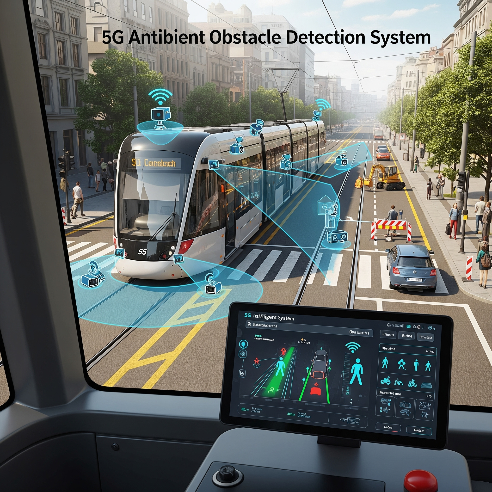
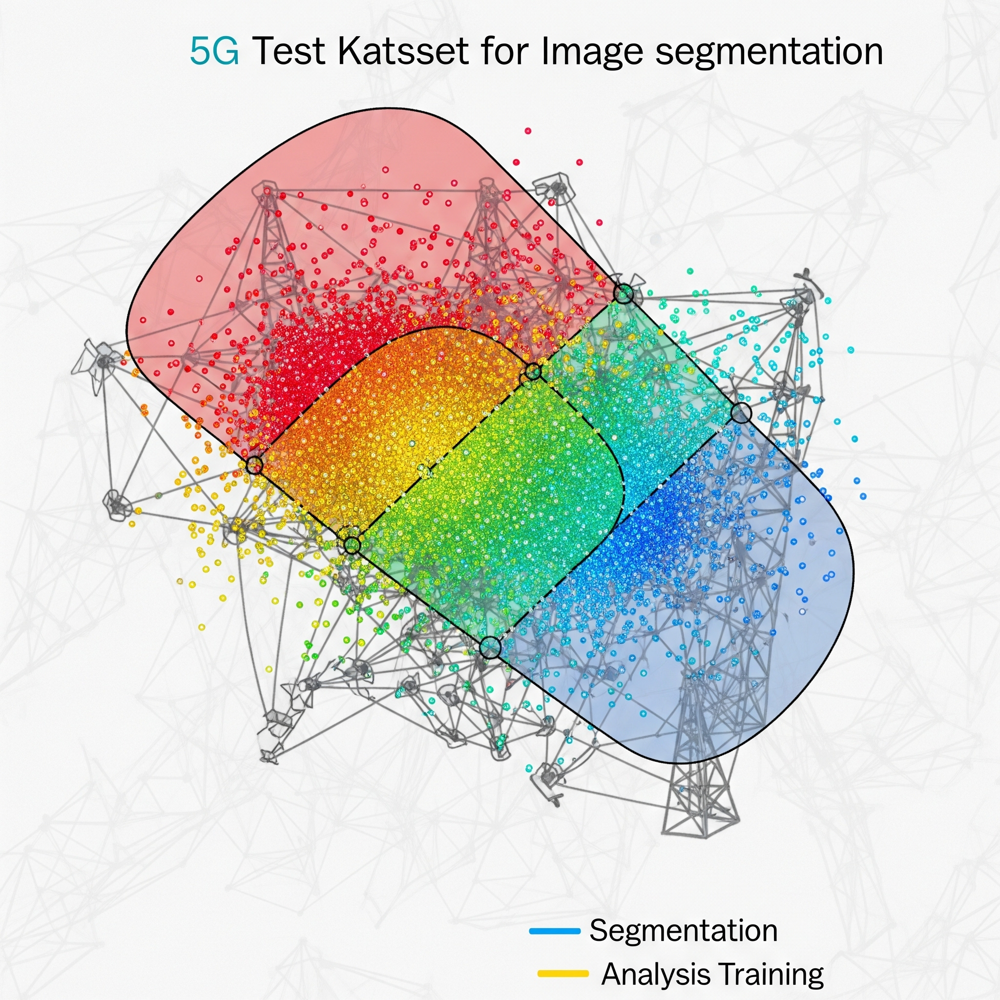

Real 5G Network Dataset
This dataset contains real-time performance metrics from a live 5G network, including KPIs like signal strength, bandwidth, latency, and node reliability.

Obstacle Detection System Dataset
This dataset contains data from the obstacle detection system of a tram operating in Florence tramway system equipped with RADAR and LiDAR sensors. The system processes data from these sensors with many complex algorithms to detect and track position and trajectory of many objects standing still or moving in front of tram.
Tram's Positioning Dataset">
Tram's Positioning Dataset
This dataset contains data from the positioning system of a tram operating in Florence tramway system equipped with a set of sensors (RADAR, inertial measurement unit and GNSS). The system processes sensor data through fusion algorithms and determines the relevant tram position.
Space/Time User Distribution Dataset
This dataset contains measurements of the number of users connected to the Wifi indoor Access Points (APs) deployed in the Campus Nord of UPC in Barcelona. Measurements are given as a function of time covering a total of 62 days. The dataset also includes the information of the theoretical coverage area of each AP, so that the number of users connected to an AP can be associated to a specific geographical area, thus having the user distribution in time and space.

Real Time Video Dataset
This dataset includes the point cloud of a 3D avatar. The point cloud, produced from FM POINTS, encapsulates the complete Augmented Reality (AR) landscape and written in a PLY file. Originating from a densely packed data set of more than 30,000 individual points, it's subjected to a process of downsampling, wherein it is reduced to a manageable subset of 2,048 distinct points without significantly compromising the overall visual and data integrity of the AR scenery. The ground truth label is represented as the skeleton points of the avatar, which are written into a JSON file. Each skeleton has its own attribute information, including skeleton identification, position, rotation, color, and index number. To ensure effective communication, we use 25 skeletons to represent the avatar we use.

RAN Dataset
This dataset contains Radio Access Network (RAN) metrics in a 5G emulation environment based on OpenAirInterface (OAI). It includes time-series measurements representing network behavior over 5 weeks (~10,080 samples)

Deployed Slicing Testbed Dataset